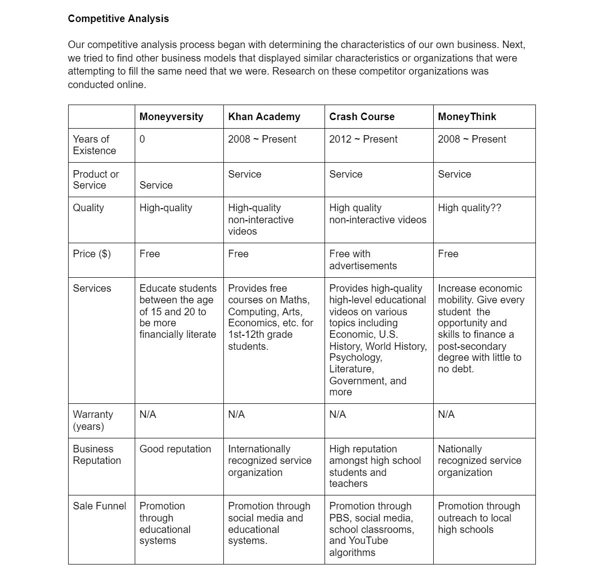
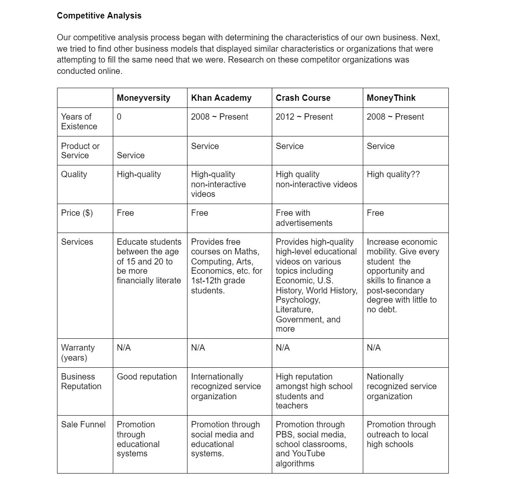

Moneyversity
Team: Anna Yuan, Jamie Park

Introduction
Moneyversity is a game-based learning platform that aims to help college-age young adults improve their financial literacy skills. The curriculum covers a wide range of topics from budgeting to investments. During the learning process, each student is paired up with a virtual character who is an alien exchange student needing to learn financial literacy in order to adjust to life on Earth. The student serves as the alien's financial advisor and helps their alien make smart financial decisions.
This was a semester-long project completed over Fall 2020 semester in The Role of Technology in 21st Century Learning, taught by Dr. Amy Ogan from Carnegie Mellon's HCI Institute.
My team members and I created this entire project ourselves from ideation to the final prototype, and we collaborated on all parts of the project.
Ideation
My teammates and I were tasked with creating an educational platform that addresses a societal need of our choice. We chose financial literacy because it is an issue that has a very tangible impact on the lives of young adults, but is often overlooked in formal education systems.
We began by defining our problem, building our user profile, and conducting competitor analyses. This helped us to narrow down the exact goals of our platform and laid the foundations for our user flow and preliminary user interviews.

 
Learner profile and competitive analysis

Learner profile and competitive analysis
 User flow
User flow
Preliminary User Testing
In total, we completed two rounds of user interviews. Our preliminary interview was aimed at informing our user flow and construction of the Moneyversity curriculum, while our second round of interviews was designed to identify opportunities for improvement in our interface and application of motivational theories.
Our first round user interview mainly consisted of content-related and learning style questions. Broadly, we wanted to know what topics in financial literacy our target users were most interested in learning, whether they had been taught these concepts before, whether they had any interest in learning about financial literacy, and their preferred methods of content delivery.

 Interview script and main findings
Interview script and main findings
Our preliminary user interviews gave us 3 main insights:
1. Users are unfamiliar with financial literacy but recognize its importance.
100% of our interviewees said they had never encountered financial literacy in a formal education context. However, they recognized that financial literacy is an important skill for their future and expressed interest in becoming more financially literate.
2. Our users have a wide range of financial literacy skill levels.
The lack of formal education in financial literacy meant that our users' existing knowledge (if they knew anything at all) was from informal sources like relatives/guardians or online articles. Some of our users knew nothing, some knew the basics, while others probably knew more than us.
3. Users indicated an overwhelming preference for multimedia learning.
Our interviewees said that they preferred to learn from interactive and visual online platforms. One user cited Khan Academy as an example.Low/Mid-Fidelity Prototype
We used the insights gained from our preliminary user testing to create our first prototype, which ended up closer to a mid-fidelity prototype by the time we were done.

 Panels from our mid-fi prototype
Panels from our mid-fi prototype
We incorporated elements like multimedia learning, learning by teaching, and in-game rewards to increase motivation.
User Testing on Prototype
Our second round of user testing was focused on fine-tuning our mid-fidelity prototype and idenfitying opportunities for increased learner engagement and motivation.
We decided to take the users on a walkthrough of our prototype and allow them to give their own insights first, then asked a series of targeted questions aimed at measuring our platform's effectiveness.
We also incorporated a series of learning science principles that we covered in class.


Final Prototype
We added several new elements suggested by our test users, including a reference dictionary and a diagnostic quiz before each module so that users who are familiar with the concept can know to skip it entirely.
 Dashboard and learning progress
Dashboard and learning progress 
 Getting started
Getting started
 Learning content delivery
Learning content delivery
 Decision-making exercises and feedback
Decision-making exercises and feedback